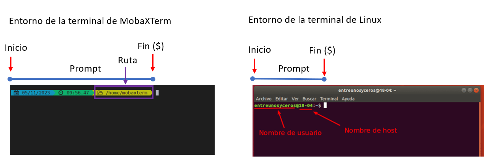
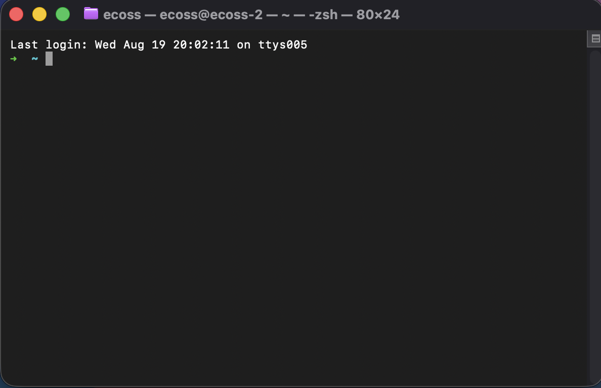
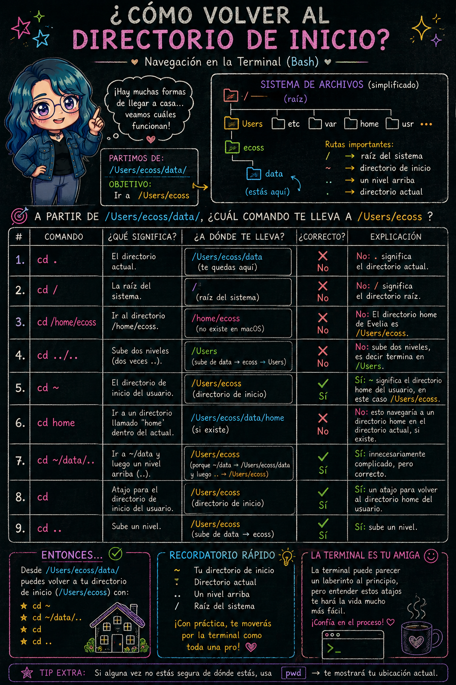

17 Mis primeros pasos en Bash
Fecha: 10 de septiembre, 2026
17.1 Entorno de Bash

El signo $ es un prompt, que nos muestra que la terminal está esperando una entrada; tu terminal puede usar un carácter diferente como prompt y puede agregar información antes de él. Al teclear comandos, ya sea a partir de estas lecciones o de otras fuentes, no escribas el prompt ($), sólo los comandos que le siguen.
17.2 Entorno de zsh en macOs

Puedes decorar tu terminal con oh my zsh si tienes macOS.
17.3 Preparación del directorio de trabajo
Ruta / Camino absoluto
cd /home/usuario/data/Ruta / Camino relativo
cd ../ # Ir a la carpeta anterior
NOTA 1: Si das cd y no indicas una ruta absoluta, te llevara al Directorio Raiz (~).
NOTA 2: Puedes usar la tecla TAB para completar el nombre de la carpeta. En caso de que tengas más de dos carpetas que inicien igual, tendrás que terminar de completar el nombre.
17.4 Conocer mi dirección / ubicación
Averiguemos dónde estamos, ejecutando el comando pwd (que significa “imprime directorio de trabajo” - “print working directory”). En cualquier momento, nuestro directorio actual es nuestro directorio predeterminado, es decir, el directorio que la computadora supone queremos ejecutar comandos a menos que especifiquemos explícitamente otra cosa. En este caso la respuesta de la computadora es /Users/nelle, el cual es el directorio de inicio de Nelle, también conocido como su directorio home:
pwd # /c/Users/ecossEn la computadora de Evelia, el sistema de archivos se ve así:

En la parte superior está el directorio raíz o root que contiene todo lo demás. Nos referimos a este directorio usando un caracter de barra / por si solo; esta es la barra al inicio de /Users/ecoss.
Dentro de ese directorio hay otros directorios: bin (que es donde se almacenan algunos programas preinstalados), data (para archivos de datos diversos), Users (donde se encuentran los directorios personales de los usuarios), tmp (para archivos temporales que no necesitan ser almacenados a largo plazo), etcétera.
A partir de /Users/ecoss/data/, ¿Cuál de los siguientes comandos podría Evelia usar para navegar a su directorio de inicio, que es /Users/ecoss?
cd .cd /cd /home/ecosscd ../..cd ~cd homecd ~/data/..cdcd ..
Ejemplo de rutas:

17.5 Comandos básicos
| Comandos | Información | Argumentos |
|---|---|---|
ssh |
Conexión a servidores | ssh usuario@servidor.mx |
ls |
Observar el contenido de los archivos en una carpeta | ls directorio/ |
cd |
Moverse de directorios | cd /home/usuario/data/ |
mkdir |
Crear un nuevo directorio | mkdir data |
rmdir |
Eliminar el directorio | rmkdir -rf data |
nano / vim |
Editores de texto plano | nano Archivo.txt / vim Archivo.txt |
cp |
Copiar archivos | cp Archivo1.txt /home/usuario/data/ |
mv |
Mover un archivo o carpeta | |
echo |
Para llamar y/o declarar variables | echo “Hello world” |
chmod |
Cambiar permisos del usuario | chmod 777 data/ |
rsync |
Descargar o subir archivos | |
scp |
Descargar o subir archivos | |
cat |
Visualizar contenido de un archivo. Escribe el contenido del archivo de manera secuencial a la salida estándar, a la ventana de Terminal. | |
less |
Leer contenido de un archivo sin interrumpir la pantalla de Terminal. Similar a Vim pero sin opción para escribir. Se sale del modo visualización con q. |
|
find |
Busca archivos en un directorio específico. | |
head |
Visualizar primeras líneas de un archivo. | |
tail |
Visualizar últimas líneas de un archivo. | |
which |
Indica el directorio donde se encuentra un particular comando o programa que se haya podido encontrar usando los directorios guardados en la variable de estado PATH. |
which bash |
Puedes consultar mas información usando man ls
17.6 Consultar información sobre archivos y directorios
17.6.1 Información contenida
Cada columna en la salida anterior tiene un significado:
17.6.2 Permisos
Cada usuario tiene permisos diferentes cuando crea un archivo. Los permisos pueden modificarse con chmod.
Los caracteres atribuidos a los permisos son:
r: escritura (Read)w: lectura (Write)x: ejecución (eXecute)
En el siguiente ejemplo, el usuario cuenta con todos los permisos activos, mientras que el grupo y otros tienen solo permisos de lectura y ejecución.
17.7 chmod: Cambiar permisos
La representación octal de chmod es muy sencilla
r= Lectura tiene el valor de 4w= Escritura tiene el valor de 2x= Ejecución tiene el valor de 1
| Permisos | Valor | Significado |
|---|---|---|
| rwx | 7 | Lectura, escritura y ejecución |
| rw- | 6 | Lectura, escritura |
| r-x | 5 | Lectura y ejecución |
| r– | 4 | Lectura |
| -wx | 3 | Escritura y ejecución |
| -w- | 2 | Escritura |
| –x | 1 | Ejecución |
| — | 0 | Sin permisos |
Por lo tanto:
| Forma larga | Forma Octal |
|---|---|
chmod u=rwx,g=rwx,o=rx |
chmod 775 |
chmod u=rwx,g=rx,o= |
chmod 760 |
chmod u=rw,g=r,o=r |
chmod 644 |
chmod u=rw,g=r,o= |
chmod 640 |
chmod u=rw,go= |
chmod 600 |
chmod u=rwx,go= |
chmod 700 |
17.8 Comprimir y descomprimir archivos
Los archivos pueden contener diversos tipos de extensiones, dependiendo del objetivo será necesario descomprimirlos y en otros dejarlos comprimidos para no abarcar tanto espacio en tu espacio de trabajo.
| Tipo de archivo | Comprimir | Descomprimir |
|---|---|---|
| Carpeta.tar | tar -cvf carpeta.tar /dir/a/comprimir/carpeta |
tar -xvf carpeta.tar |
| Carpeta.tar.gz | tar -czvf carpeta.tar.gz /carpeta/a/empaquetar/carpeta |
tar -zxvf carpeta.tar.gz |
| Carpeta.gz | gzip -9 carpeta.gz carpeta/a/empaquetar/carpeta |
gunzip -kd carpeta.gz |
| Carpeta.zip | zip -r carpeta.zip carpeta |
unzip carpeta.zip |
- Crea una carpeta llamada
respaldo.
mkdir respaldo- Crea dentro de ella los archivos uno.txt, dos.txt y tres.txt. Usa el comando
touch respaldo/uno.txt respaldo/dos.txt respaldo/tres.txt- Configura los tres archivos con permisos
rw-r-----.
Recuerda que:
- rw- = 6
- r– = 4
- — = 0
chmod 640 respaldo/*.txtY comprueba que si se cambiaron los permisos con ls -l respaldo`.
- Comprime la carpeta completa en un archivo llamado
respaldo.zip
zip -r respaldo.zip respaldo/La opción:
-r→ comprime de forma recursiva la carpeta y su contenido
- Elimina la carpeta
respaldo(la que no esta comprimida).
rm -r respaldo- Comprueba que la carpeta ya no existe.
lsLa carpeta respaldo ya no deberá aparecer, pero sí: respaldo.zip.
- Recupera la carpeta utilizando
respaldo.zip. Es decir, descomprime la carpetarespaldo.zip.
unzip respaldo.zip- Comprueba que los tres archivos fueron recuperados.
ls respaldo- Revisa sus permisos.
ls -l respaldo17.9 Material suplementario
- Software Carpentry. La terminal de Unix
- RSG Ecuador.GNU/Linux para bioinfomatica
- Introduction to the Unix Shell for TranscriptomicsTutorial.